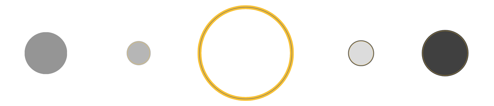

JupyterSats

JupyterSats is a set of projects that aims to offer powerful and easy-to-use tools for students and docents mainly in the science and technology field.
Jupyter is the centre of this set of projects. It enables to develop open-source software, open-standards, and services for interactive computing across dozens of programming languages. Each project is a satellite, a self-contained and independent application or server, whose point in common with the other satellites is the fact of being based on Jupyter.
See the satellites ➤
Wide scope
Putting easy-to-use interfaces between users and powerful tools makes our
applications appropiate for secondary, undergraduate and graduated students.
Usability
We focus on creating usable apps: simple and self-explaining interfaces pave the way to understand basic concepts. The students learn in a more organic way, easier and faster.
Free to use
JupyterSats and all its related applications are licensed under the GPLv3 license. You just have to cite our work to use them.
How to cite ➤
Who we are
We are a group formed by both students and teachers from the University of the Basque Country (UPV/EHU) interested in improving the way physics is taught.